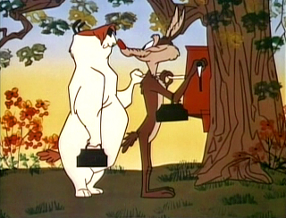
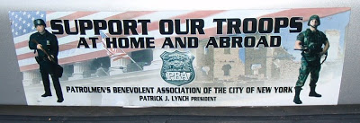
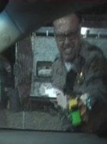
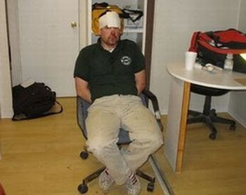

Nothing Personal -- It's strictly business: Professional antagonists Sam Sheepdog and Ralph Wolf (not to be mistaken for his more famous cousin, Wile E. Coyote), prepare for a day of mayhem among the sheep.
After leading police on a long chase near the same Slauson Cutoff made famous by Johnny Carson (and jazz trombone virtuoso Bill Watrous), Richard Rodriguez was obviously going to jail.
At the end of a vehicular pursuit that endangered the lives and property of several people, Rodriguez -- an accused street gang member -- side-swiped a parked car before coming to a stop near a small cluster of buildings. The driver bolted from the car and a brief foot chase began.
Surprisingly fleet and agile, Rodriguez sprinted a quarter-mile or so before cornering himself in a fenced backyard. Taking a deep breath, and being familiar with the drill, Rodriguez flattened himself on the ground, arms outstretched, palms down, waiting for the police to arrive.
First on the scene, several seconds later, was George Fierro, a15-year veteran El Monte, California police officer who, seeing the prone and unresisting suspect flat on the ground, nonetheless hauled off and kicked him full in the face.
Another officer quickly joined Fierro, giving Rodriguez a couple of shots with what appeared to be a small club as the two cops handcuffed the suspect. With Rodriguez in shackles, Fierro waddled over to a nearby K-9 officer to indulge in a triumphant high-five.
***
***
The real scandal here, insists retired LA Sheriff's Department investigator Dean Scoville, was not the unnecessary use of physical force by Fierro, but rather the "conspiracy" he discerns on the part of "the f___ing news media that's putting the boot to our collective heads because of it."
Officer Fierro's only offense, Scoville sneered in the pages of Police magazine, is "Working in the wrong era."
"There was a time when post pursuit ass-kickings were obligatory," Scoville writes wistfully. "Cops knew it, suspects knew it, and there are enough old times on both sides of the fence that will verify the assertion when I say that what this officer did was NOTHING compared to what would have happened in another place and time.... I'm nostalgic for the days when the pursued feared the judicial system if for nothing but the inevitable ass-kicking and street justice."
Society is no safer now that police have supposedly abandoned those wise old ways, insists Scoville; instead, we've empowered the criminal element and enhanced the peril faced by the law-abiding.
There are two factual problems with that analysis.
Scoville's first error -- as can be amply documented, thanks to the near-ubiquity of cell phones and the blessing of on-line file-sharing sites -- is to claim that the practice of "street justice" by police officers has gone the way of the vinyl LP; in fact, it may be more widespread today than in any previous era.
The second problem with Scoville's assessment is this: Violent crime by private-sector criminals is less of a threat now than it has been in quite a while. Note carefully the qualifying phrase "private sector criminals"; we'll return to that distinction in a second.
Lt. Col. David Grossman, a West Point instructor and retired Army Ranger who provides combat instruction for police officers nation-wide (put a bookmark by that critical thought as well), points out that while we "may be living in the most violent times in history ... violence is still remarkably rare."
True, an estimated two million Americans are victims of violent crimes each year, but with a population of some 300 million Americans "the odds of being a victim of violent crime is considerably less than one in a hundred on any given year," Grossman observes. "Furthermore, since many violent crimes are committed by repeat offenders, the actual number of violent citizens is considerably less than two million."
From this we see that violent crime, while a problem of considerable magnitude, is hardly an omnipresent threat. Yet many commentators, including Grossman himself, treat this containable social problem as if it were a relentless onslaught carried out by a huge, well-organized enemy, and insist on examining it in military terms.
The police, according to Grossman, are "Sheepdogs," people specially endowed by God, or evolution, or something, with "the gift of aggression." The rest of us are mere "sheep" who "live in denial ... [not wanting to acknowledge] that there is evil in the world."
Oh, but let not your pitiful ovine heart be troubled; Grossman soothingly assures the rest of us that Sheepdogs "would no more misuse this gift [of aggression] than a doctor would misuse his healing arts," even though Sheepdogs understandably "yearn for the opportunity to use their gift to help others."
From this perspective, when the Sheepdogs get a little rough with their charges -- say, body-slamming a woman face-first into a restaurant floor, leaving a tiny young man in a coma after body-checking him head-first into a wall, or putting a 12-year-old girl skateboarder in a chokehold -- this isn't abuse; it's an outgrowth of their irrepressible "yearning for an honest battle."
Ah.


An army of occupation: If police are "our troops" -- "domestic warriors" -- aren't we actually under a relatively benign form of martial law (assuming the term "benign" is appropriate)? (Thanks to Rad Geek.)
As mentioned earlier, Grossman has been heavily engaged in providing combat instruction to police officers across the country, particularly since 9-11. That fact offers a partial answer to a question increasingly on the lips of Americans unsettled by the ever-growing tide of police abuse: Why do police increasingly behave like an occupying army, rather than civilian peace officers?
Grossman has done as much as anybody to infect police officers with the conceit that they are a warrior caste, apart from and -- by virtue of their capacity to inflict violence -- superior to the "sheep" they supervise.
That conceit was on display in a recent Police magazine essay by trumpeted retired SWAT officer Robert O'Brien, who described police as "society's sheepdogs, [who] willingly and selflessly protect your flock -- with your lives if necessary.... You are our nation's domestic warriors and heroes."
O'Brien's psalm of self-praise ventures into frankly fascist territory when he describes the fraternity of armed tax-consumers as "a thin blue line [that] strengthens into a solid steel band of brothers" in the face of danger and adversity.
Now, I admit that there have been exceptional cases in which police have risked life, limb, and health in genuinely heroic service to innocent people -- just as there are good and conscientious people employed in the hopelessly corrupt and collectivist public school system.

There are some remarkable individuals in police work who perform their duties with a commendable combination of boldness and self-restraint, and then are killed in the line of duty at a tragically early age.
The late Officer Randal Simmons of the LAPD -- ironically enough, a SWAT commander -- appears to have been such a genuinely exceptional individual.
Simmons was killed in a standoff with an armed, violent criminal who had killed two members of his own family. He was, signficantly, the first LA SWAT operator to be killed in the line of duty since the unit was formed forty years earlier.
Simmons's apparent reluctance to use unnecessary force was the most important of several traits that set him apart from the rising crop of police officers. Too often, the "solid steel band of brothers" extolled by O'Brien displays its determined solidarity by defending each other against accountability, rather than intervening to protect the innocent from criminal violence.
For too many, "officer safety" is the prime directive, whether the situation at hand is a Columbine-style shooting rampage or an inquiry into an act of criminal abuse by a fellow officer.
Consider the former example, the murder rampage at Columbine, during which heavily armed police and sheriff's deputies valiantly arrested fleeing teenagers while the shooters gunned down victims without opposition.
Here's Grossman's view of that episode: "The students, the victims, at Columbine High School were big, tough high school students, and under ordinary circumstances they would not have had the time of day for a police officer..... When the school was under attack, however, and SWAT teams were clearing rooms and hallways, the officers had to physically peel those clinging, sobbing kids off of them. This is how the little lambs feel about the sheepdog when the wolf is at the door."
What the "sheep" didn't know at the time was that the "wolves" were already dead at their own hands, a development not brought about in any way by the actions of the "sheepdogs." The only contribution made by the "warriors" at Columbine was to plant the flag after the battle was over, and the enemy had moved on.
Of course, the Sheepdogs have been eager to capitalize on the actions of the Wolves at Columbine and elsewhere, to enhance their warrior cred. This underscores a cynical symbiosis between the sheepdogs and the wolves: The former need the latter, or at least the threat of the latter, in order to define themselves and justify their growing presence and influence in society.
As noted above, the "private" criminal element of American society, by Grossman's estimate, amounts to "considerably less than two million." As of 2005, the total population of state and local American police personnel was just under a half-million. (That figure obviously doesn't include the ever-expanding number of federal law enforcement personnel.) How many of the "sheepdogs" are actually latent Wolves, lacking only the right set of circumstances for their lethal lupine nature to assert itself?

When Officer Fierro kicked an unresisting suspect in the head, was he acting as a Sheepdog "yearning for a righteous battle," or as a Wolf exploiting an opportunity?
In his particular case, there's evidence to believe that Fierro is the latter.
When he's not patrolling the mean streets of El Monte, Officer Fierro brings in the bucks as owner of Torcido clothing, a specialty shop catering to gang-bangers and ex-convicts. "Torcido" (Spanish for "torqued" or "tiwsted") is Chicano slang for being imprisoned. Among the products offered by Fierro's company is a t-shirt bearing the inscription "186.22," with a bullet for the decimal point. The number refers to the penal code section dealing with gang crimes.
Local newspaper columnist Frank Girardot points out that Officer Fierro's company "caters to gang members and glorifies the Mexican Mafia." Girardot quotes LAPD Detective David Espinoza: "I understand the gangs really love this cop. I understand the clothing has hiding places for contraband, guns and dope. Things that can hurt our real cops on the street." (Note well that even here the first priority is "officer safety.")
When Fierro kicked Rodriguez in the face, was he guilty of abusing a customer, as well as police brutality? It's tempting to imagine him sharing lunch or hoisting an after-work beer with some of the same street criminals he pursues while on the clock. There's certainly something about his situation that gives off an odor reminiscent of the relationship depicted in Chuck Jones's classic "Ralph and Sam" cartoons.


The face of a sociopath: An Arizona Department of Public Safety officer displays a twisted, sadistic grin as he tazes Pastor Steven Anderson (see below, right), a law-abiding American whose only "offense" was to resist an unconstitutional search of his vehicle.Fierro's case resonates with a familiar cinematic cliche, that of the "supercop" with friends on "both sides of the law."
Much celebrated in film and television, this affinity actually exists, according to a study published ten years ago in the Journal of Police a Criminal Psychology.
The problem, according to that study, is that this demonstrates the prevalence of a certain type of sociopathic personality in both crime and law enforcement, since "the characteristics of `supercops' [are] similar and perhaps even interchangeable with those of habitual criminals." Among the salient traits of both groups are "a disposition toward control, aggressiveness, vigilance, rebelliousness, high energy level ... high self-esteem, feelings of uniqueness ... and a tendency to avoid blame."


Catherine Griffin and Jim Ruiz, authors of the study, point out that police work tends to select for potential and latent sociopathic personalities, since it "offers unlimited opportunities for corruption and deceit" coupled with a very tribal professional culture.
"The extent to which police officers may abuse their authority seems limitless as does the extent fellow officers will go to protect each other," they observe. "The loyalty and `brotherhood' of the police that appeals to so many has caused many officers to neglect their primary duty to protect and to serve."
The problem is that many, perhaps most, of those employed in law enforcement do not see "protecting and serving" as their primary duty, but rather as one incidental to their fratneral responsibilities to each other and their obligations to the state that employs them.
Wherever the interests of the two groups collide, we can expect the Sheepdogs to look out for each other at the expense of the Sheep. It's worth remembering that canines and lupines, as distant relatives, are both potential threats to the flock.
It's also worth remembering that the Regime ruling us coddles wolves, both the literal predator and their human equivalent. Sheep, on the other hand, are suitable only to be herded, sheared, and butchered -- and one purpose of Sheepdogs, after all, is to keep the flock together on the way to the slaughterhouse.
One of the pleasant side-effects of the ongoing depression, ironically, is a wave of law enforcement cut-backs by revenue-starved municipalities. And this trend has helped fuel a large and continuing increase in gun purchases by Americans.
This is all to the good, although we need much more of it to happen very quickly. We desperately need a radical thinning of the ranks of state-employed Sheepdogs, and for Americans by the tens of millions to discover their inner wolves.
A Programming Note
If all goes well, next Monday should see the debut of Pro Libertate Radio, an hour-long program (6:00-7:00 Central Time) on the Liberty News Radio Network. I'll have more details, including a list of terrestrial stations that carry the LNRN programming, later this week.
 On sale now.
On sale now.Dum spiro, pugno!
39 comments:
Will:
This won't be the last time I say this, but this is arguably your best work to date!
Some of the questions that frequently recurs when I ponder the topic of this piece include: What makes sheep what they are? Is it cowardice, complacency, arrogance in the certainty that "the wolves" work for "us" sheep (a clearly idiotic and illogical, but appparently commonly held fallacy), power envy, or some combination of all of these? At some point in these mental meanderings I invariably reach the conclusion that the "majority" of the 250-plus million sheep (or am I underestimating their number?) are actually latent wolves, at least in aspiration. They have no qualms with violence and criminality committed by "law enforcement" as long as it isn't committed against them and that those who are victims of this lawless state-sanctioned violence are "poodles" (from PWDL, or "People We Don't Like"). Framed in this context and assuming a large degree of truth in this assumption, it becomes tempting to take the position that the vast majority of the flock is deserving of this abuse.
Perhaps not coincidentally, Lew Rockwell, courtesy of a regular reader posted this tidbit of intellectual nourishment (http://www.lewrockwell.com/blog/lewrw/archives/027072.html) provided by the incomparable H.L. Mencken (via his Notes on Democracy) on the LRC blog yesterday that perfectly sums up the sheeple's attitude toward "law enforcement" and serves as perhaps the best explanation for their tolerance of its destructiveness:
"What the common man longs for in this world, before and above all his other longings, is the simplest and most ignominious sort of peace- the peace of a trusty in a well-managed penitentiary. He is willing to sacrifice everything else to it. He puts it above his dignity and he puts it above his pride. Above all, he puts it above his liberty. The Fact, perhaps, explains his veneration for policemen, in all the forms they take- his belief that there is a mysterious sanctity in law, however absurd it may be in fact. A policeman is a charlatan who offers, in return for obedience, to protect him (a)from his superiors, (b)from his equals, and (c) from himself. This last service, under democracy, is commonly the most esteemed of them all. In the United States, at least theoretically, it is the only thing that keeps ice-wagon drivers, Y.M.C.A. secretaries, insurance collectors, and other such human camels from smoking opium, ruining themselves in the night clubs, and going to Palm Beach with Follies girls. It is a democratic invention. Here, though the common man is deceived, he starts from a sound premise: to wit, that liberty, is something too hot for his hands- or, as Nietzsche put it, too cold for his spine."
I'm glad to see a writer of your stature putting this self-serving "sheep/wolf/sheepdog" mythology in its place.
"6:00-7:00 Central Time"
This is great news!
Am or PM?
T2T -- The program will be broadcast in the evening. Thanks!
In the study by Griffin and Ruiz did they happen to mention the percentage of police who exhibit ADD tendencies? The first place to check is the shape of the hand. Is the index finger shorter than the ring finger? If it is then the individual is in a category of possibly having ADD. The fact that they live on adrenaline would make them adrenaline junkies. Both the COP and the PERP would fall into this category. These two points alone is the best comparison of why they both do what they do.
Next time you meet a COP shake hands and then check him out. Don't tell him what you are doing. The paranoia benefit is worth it.
"O'Brien's psalm of self-praise ventures into frankly fascist territory when he describes the fraternity of armed tax-consumers as "a thin blue line [that] strengthens into a solid steel band of brothers" in the face of danger and adversity."
...and turns into teflon when they screw up so the crap doesn't hit the fan, but slides right off.
rick
A different perspective....
"The problem, according to that study, is that this demonstrates the prevalence of a certain type of sociopathic personality in both crime and law enforcement...The loyalty and `brotherhood' of the police that appeals to so many has caused many officers to neglect their primary duty... many, perhaps most, of those employed in law enforcement do not see "protecting and serving" as their primary duty, but rather as one incidental to their fraternal responsibilities to each other."
Dear Mr. Grigg,
You realize what you have described there? The classic gang-member mentality. The History Channel has aired a series of programs on the gang phenomenon, and this description fits the criminal-gang mentality perfectly. From the Nazi SA to the Crips to the Bloods to the MS-13 Suburbia to the Latin Kings to the Black P-Stones, this is exactly how gang members think.
As you point out, this is how the police are TAUGHT to think. It is a rare cop who, under peer pressure and risk of death from so-called "criminal" gangs, can think for himself and resist the gang-mentality conditioning.
How did we get to this sorry state?
Blame our law schools. I believe it is the result of several decades of corrupt lawyers getting criminals off scot-free, and the resulting frustration of police, who arrest blatantly guilty criminals only to see them released back to the streets by liberal judges, because of a nit-picking, anal, microscopic and fanatical worship of procedure and process.
Defense lawyers do not care a rats-turd if the scum are guilty of massacring an entire grade school after raping all the teachers, but only whether they can get them off the charges on an arrest technicality - it raises the fees they can get from other guilty criminals.
And prosecuting attorneys do not care a fly-fart if their victims are really guilty or not - so long as they can get a conviction, advance their own careers, and someday be appointed to the bench, whence they can eventually retire disgustingly rich.
Money and greed again - just like everything else in America.
Imagine how hard it must be for a cop to meticulously observe every line of a legal code running to ten thousand or more pages, when someone is shooting at him and/or the public. Fail to do so, and he might as well let the criminals get away and save himself the trouble of arresting them, writing up endless reports, and testifying in court.
Eventually, the frustrated police, who are only human, will take arrest, judgement, justice and punishment into their own hands. In the same situation, so would you. And so would I.
You said: "After leading police on a long chase... Richard Rodriguez was obviously going to jail."
"Obviously"? You find that obvious? Really. Perhaps if Officer Fierro was as sure of that as you seem to be, he would not have decided to administer a kick of justice to Rodriguez' face - probably the only punishment Rodriguez would ever receive - while he had the chance to do so.
Q: How many lawyers does it take to change a light bulb?
A: Fifty four: Eight to argue, one to get a continuance, one to object, one to demur, two to research precedents, one to dictate a letter, one to stipulate, five to turn in their time sheets, two to depose, one to write interrogatories, two to settle, one to order a secretary to change the bulb, and twenty-eight to bill for professional services.
Excellent and thought-provoking essay.
Lemuel Gulliver.
The first place to check is the shape of the hand. Is the index finger shorter than the ring finger? If it is then the individual is in a category of possibly having ADD.
In the spirit of full disclosure, let it be known that my index finger is about a centimeter shorter than my ring finger.
Interestingly enough, neither Korrin nor any of our children displays the same characteristic; I'm the only one in our family.
And I don't display any symptoms of Attention Deficit --
Hey! Look over there! Shiny objects, hehehe....
In all seriousness, as a child I was considered clinically hyperactive, and almost ended up on Ritalin. On account of my inattentiveness in class, I was nearly shunted onto a "special ed" track. If they'd known the little trick about checking the comparative length of my second and fourth fingers, I may have been doomed.
LG,
our current situation cannot be blamed on lawyers getting criminals off. i see nothing to support this.
the de jure laws we have are to protect the accused. if the accused get off on a technicality, more power to us cuz that means the system works.
if the police get upset at this, it is no excuse for them to resort to unlawful methods.
the problem we face today comes from many angles.
necessity is the argument of the state. the prosecution preaches why it needs to grab more power.
the police justify necessity by saying its related to job safety or it makes them more effective.
the judge, who also works for the state, buys into the argument and "makes a little exception".
the jury, when uninformed, just nods its head in agreement to the judge's cues. however, when informed, this crap comes to a halt.
on another note, the state has a monopoly on prosecutions of violent crimes against persons. so you cannot bring a charge against a local official who screwed you over unless you go the route of the fed courts. if the prosecution says no harm, no foul, you are out of luck.
the legislators, forever trying to expand there powers, will rarely go after the police since it is the police who enforce their edicts.
the sheriffs, though elected, protect their own from wrong doing instead of holding them accountable.
from the legislature, to the judiciary, to the executive, there is one big system of collusion. from uniformed juries to prosecutors who scratch the police's back, the system gets worse every day.
Jesus said this would happen, so no one should be surprised. it's gonna get worse.
stop blaming the lawyers. they cannot act alone. it takes several actors to make a play a success.
rick
Mr. Grigg, surely that "support our troops" poster isn't legit. It's been fabricated electronically, right? Tell me it isn't real.
Please.
So delighted about the upcoming radio show!!
About the police abuse of a compliant person: Sadistic COWARDS!!! What is more cowardly than the current cop behavior on youtube?
I remember when men were held to a standard of bravery. If a man assaulted a woman, a helpless person or even animals - they were despised by everyone - especially other men.
They are repulsive. Gag
Mimi, I earnestly wish the "Support Our Troops At Home and Abroad" bumper strip were a Photoshop creation. That was my first impression, as well. Everything I've seen attests that it's genuine, alas.
I received an e-mail this morning from a good friend who's a police officer in New York.
He recalled that his father, who had also been a policeman, often told him: "When the cuffs are on, the fighting stops" - that is, once the suspect has been subdued, there's no justification for punitive force, and it becomes the officer's responsibility to protect the suspect; once the cuffs are on, my friend pointed out, "nobody touches my suspect."
For many peace officers, it used to be -- and for people like my friend, it still is -- a point of professional pride that they protected suspects from mobs and other extra-judicial violence leading up to a trial. I think that's a far more commendable tradition than the gratuitous "ass kickings" celebrated by Scoville.
The index finger being shorter than the ring finger is in in the category of being male, not having ADD. Women have a longer index finger than ring finger.
This essay explains why, at a cop funeral in Moscow, Idaho, that I attended a couple of years ago, they went on and on about the blessed, hero cops protecting the poor little, helpless sheep against the wolves. At the time I thought, "Where did THAT come from?" Little did I know, but how well I can believe, that it comes from such dubious sources. Funerals are famous for being all smarmy and sentimental, and I had chalked it up to that.
Thank you for another outsanding article. Thank you for exposing evil in our land and for promoting patriotism.
The police see things differently. Their job is not to protect and serve anyone but themselves and to keep the herds in line. For some reason it is particularly difficult to keep herd members who are suffering from insulin shock in line (submissive), so diabetics must often be tasered to keep the peace.
It doesn't seem to end. Does it? I seem to recall there were folks time and again in California asking that they cease to do high speed chases as it endangers the public! Notice the irony here that cops purportedly keep you safe by putting your life at risk. But, of course, being as they have a monopoly on force anything they DO or whatever happens to YOU because of their incompetence or corruption has an automatic get out of jail card. With the cops having their own air force, in the form of choppers, there is also no need to run anyone down at break neck speed but that wouldn't make for "exciting" television to further grind down the masses into submission through entertainment. And on top of everything else when they can arm themselves with SMG's and pooh pooh the common prole for having a handgun thats when you know the table is tilted.
I'll ask it again, if I missed it somewhere, but has anyone done a study to see how many ex-VETS are employed within the bowels of said state "police" or "law enformcement" organs? I would imagine the numbers to be eye opening.
They may call themselves sheepdogs but their conduct increasingly resembles that of wolves but in blue clothing.
The sheepdogs, my friends, are millions of armed, trained, and vigilant citizens. Unfortunately not enough of us are acting to dispatch the wolves...regardless of how they are dressed.
jk
Will has at least one article about police departments recruiting Iraqi veterans – Rubicon in the Rear-View, Part I: Militarizing the Police, dated 9/24/08.
Doesn’t California have a channel devoted exclusively to car chases? Or used to? I wonder if business has dropped off now that it has practically become a capital offense. Cops would fight to the death to retain their ”right” to chase adolescents through residential neighborhoods at 100 mph.
On the New York City PBA website (www.nycpba.org), I was unable to find the 'Support Our Troops At Home And Abroad' graphic featured in the article. In fact, I couldn't find any merchandise, such as the little PBA shield decals that people affix to their rear windows in the vain hope of escaping a ticket in a traffic stop.
Not that I doubt its veracity, but it would be a story in itself to track down an official source for this image, which invokes fascist martial law themes with chilling clarity. Maybe a simple inquiry to the PBA press contact would clarify the issue.
All you need to know is the story of the Mayor of Berwyn Heights, MD who was raided by a drug SWAT team (the SWAT team killed the two beloved dogs of the mayor - does that jog your memory?). Go reread about it.
The part of the story that sticks in my mind was that about a local police officer that knew the mayor and his wife.
This local police officer, who was not part of the raid, arrived after the initial raid. Here is the kicker: he said he stayed close to the mayor and his wife throughout the ordeal to protect them! He believed the SWAT team, upon discerning that it had been a botched raid, would have killed everyone in the house and then done whatever was necessary to create a cover story!
I understand the motto now "protect and serve". the Cops believe:
WE are livestock belonging to the rich elite.
THEY are sheepdogs in servile service (slathering, fawning, god-like submission) to the rich elite.
Protect the property of the elite, serve the elite interest.
Goodness, what about all that propaganda once spewed forth about the good and faithful public-servant cop? The 'good old days' were licentious rolics for the sheepdogs.
Propoganda works. Most people believe it, that is why they ARE sheep.
Thank-you for helping unmask the metaphor!
So, how is it that we little people aren't justifiably in fear of our lives with every police interaction we might have given:
1) there are almost no severe penalties for police when they maim or kill us
2) they are almost always armed with multiple life threatening weapons while making it difficult for us to be similarly armed
3) they often travel in gangs and always have access to backups via radio and dispatch services
4) we're effectively legally prohibited from trying to do even the slightest thing to defend ourselves once they attack us
5) any other place you might try to get to is occupied by a similar gang who is all too willing to take up their "brother's" grudge so you can't get to a neutral place to surrender yourself for impartial evaluation without risk of unaccountable reprisals for things you may not have even done
I understand the motto now "protect and serve". the Cops believe:
WE are livestock belonging to the rich elite.
THEY are sheepdogs in servile service (slathering, fawning, god-like submission) to the rich elite.
Protect the property of the elite, serve the elite interest.
Goodness, what about all that propaganda once spewed forth about the good and faithful public-servant cop? The 'good old days' were licentious rolics for the sheepdogs.
Propoganda works. Most people believe it, that is why they ARE sheep.
Thank-you for helping unmask the metaphor!
Interesting: the sheepdog and sheep metaphor dehumanizes the regular 'folks' and leaves human only to the ruling elite. Just what the elite would like, for they consider We the People with a propriety bordering on ownership.
Will,
You mention that you will soon be on Liberty News Radio. You will be sharing the airwaves with a skin head by the name of James Edwards (Political Cesspool).
You may want to rethink being there after reading his rant against the Boy Scouts for permitting "Mexicans" to join their ranks. This is a horrible rancorous post.
http://www.thepoliticalcesspool.org/jamesedwards/category/immigration/
Great article Will. The Patrolman's Benevolent Association (of New York City) image sums things up perfectly. Apparently, those who are not members of the thin blue line (or political class) are viewed and often treated like dangerous insurgents.
http://www.cnn.com/2009/CRIME/06/06/jersey.police.beating/index.html
check out that link, it's sad, but I have to share it, I'm so numb to it all that I have to force myself to react everytime I read a story like this. Thanks.
I keep thinking it comes back to cops are no longer Peace Officers but Law Enforcement Officers. They see themselves as doing whatever and the courts will deal with whatever they do. So if they frame a person that's fine and dandy its the courts fault if that person ends up in prison or what have you.
Yesterday I got to see an Ada county cop having a young girl by herself in a decent car pulled over in a Jackson gas station in broad daylight. The cop looked to be late 20's and was 6'2" at about 215 pounds was standing with his legs apart bent over about four feet away from her car window. Clearly he was ready to pull his gun and kill her if she moved in any quick and or strange way. Good thing she was health and didn't fall into some medical condition that scared him. Or her medical condition could have been lead related. In south east Boise my 60 plus year old mother-in-law is driving in what seemed like a 35 mph road and was doing just that to be pulled over and giving a ticket for 36 mph in a 30 mph zone. Of course the 30 mph zone is such to shake down citizens. In fact, with having to have my car checked every year for smog. A 30 mph zone makes more smog keeping the RPM's at a much higher rate.
Far too many of the cops in our world today are criminals who endanger us lawful citizens far more than real criminals do. I have zero fear of criminals but don't see people in government in that light.
You heard it here first: When the dollar crashes and there's a run on food. You can bet the cops are going to get together in groups and use their cop equipment to go about unlawfully raiding decent citizens homes to steal their food. The "good cops" who have food and know this is going on will turn a blind eye on the other cops doing such raids to steal food from lawful and peaceful citizens.
If anyone here has any doughs of cops raiding home to steal food for themselves when food is the new currency better wake up.
Ask yourself this: If you see a low rider with some punks in it do you worry even a little bit? If you see a cop behind you do you worry even a little bit?
Hi all, if you haven’t read the article Will quoted from, On Sheep, Sheepdogs and Wolves by Lt. Col. Dave Grossman, you really should. It is one of the most sickening things I have ever read. Grossman compares the sheep (us) to a robin’s egg, soft and gooey on the inside, and incapable of surviving without a hard outer shell: “Police officers, soldiers and other warriors are like that shell, and someday the civilization they protect will grow into something wonderful. For now though, civilization needs warriors to protect them from the other predators.” (“Other?”) So, if people are egg goo, what are cops? Besides being our hard protective shell, a cop is also “…a sheepdog, a warrior, someone who walks the hero’s path. You are able to walk into the heart of darkness, into the universal human phobia, and walk out unscathed.”
“Universal human phobia” is explained elsewhere on the internet as interpersonal violence; the innate human aversion to killing other humans is a “phobia” shared by sheep, but not by wolves and sheepdogs. Grossman writes that the only difference between sheepdogs (cops) and wolves (criminals) is that sheepdogs “must not, cannot and will not ever harm the sheep.” (BTW, Grossman uses the term “warriors” thirteen times.)
The truth is, the only differences between cops and criminals are that criminals have more self-control and are discriminating in their choice of prey.
This article, Twilight of the Psychopaths by Dr. Kevin Barrett, mentions Sheepdog Trainer Lt. Col. Dave Grossman:
“In On Killing, Lt. Col. Dave Grossman has re-written military history to highlight what other histories hide: The fact that military science is less about strategy and technology, than about overcoming the instinctive human reluctance to kill members of our own species.”
And this maniac is a cop instructor? I’m just not feeling the love.
As usual, I cannot find a way to make the blog software automatically send back a link here. Please accept my response link to this article and to one of the comments.
It should unleash our inner "sheepdog", not our inner "wolf". (This de-funding of state-employed wolves in sheepdog's clothing...)
As we evolve into the fascist police state, it will be nessesary to keep the sheep in line. This does not bode well for the sheep. What we are seeing is the militarization of our police forces. They are morphing into combat troops on the streets. Hence, more gun purchases by honest people. They see it coming. DHS is setting the stage by demonizing those that would protect their God given rights. Push will come to shove...soon. Keep your powder dry.
I loved this article.
Police give me anxiety that they never used to twenty years ago and I'm not a criminal.
the steady ratcheting up of 'terror tactics' and never ending tasering and beatings, means that they are preparing for 'war' with We The People now.
and we must be willing to take them on if and when the time comes for us to confront them in the streets.
people need to be ready to do the peaceful revolution first, but if they fire upon us, we have no choice but to dismantle their entire system, one corrupt, filthy thug cop at a time. and this goes for military who fire upon us in the streets, as well!
I posted before, re the Gates fiasco, speaking to having been a police officer in years past. As a rookie In San Diego, I heard stories from older officers about how things were handled in "their day".
It was believed that "street justice" prevented petty crime, as a brief beating made the "perp" less likely to repeat his behavior. And, as well as I am able to determine from talking to the old-timers, they were not cuffed while being thrashed. Often the bad guy got in a few licks of his own, but that was considered the cost of doing business. He wasn't "Rodney King'ed" simply for trying to fight back.
Again, I am not condoning this, merely mentioning the way things were sometimes done back then. There was a distinct, if perhaps still unacceptable, difference between then and now: after the ass-kicking, the bad guy was released, not arrested.
Today, the "us vs them" mentality so prevalent in the ranks, along with the knowledge that there usually is no punishment for the use of excessive force (unless caught on video), has fostered a feeling amongst cops themselves that they are above the law.
When you add in the fact that the legal system indeed does permit obvious criminals to go free - even when it has been proven that they committed a crime of violence such as rape, assault, or robbery, but some liberal judge cuts him loose anyway (been there, seen that) - you have a recipe for abuse by cop. The next time an officer who has lost sight of his real purpose stops someone, there is a good chance his frustration may move him to criminal behavior himself.
And yes, I believe the lawyers are indeed the largest part of the problem. What do you call a lawyer with an IQ of 50? "Your Honor." Lawyers become the judges who frequently allow their liberal - or right-wing - biases to affect how they apply those laws. Judges, who were lawyers, instruct juries in such a way as to deprive the accused of their rights, and will not permit it to be known that jury nullification is both the right and DUTY of every juror. And heaven forfend that the last check upon the overweening power of the Executive and Legislative branches of our government, the SCOTUS, becomes a hotbed of socialism, desirous of interpreting the Constitution in their own image.
Lawyers sit in Congress and create the laws that we all suffer under. Lawyers were known to be a major part of the problem as far back as Elizabethan England. Shakespeare had one of his characters in Henry VI say, "The first thing we do, let's kill all the lawyers". To which another added, "Is not this a lamentable thing, that of the skin of an innocent lamb should be made parchment? that parchment, being scribbled o'er, should undo a man?" - (Act IV, Scene II).
I am reminded of "Team America: World Police", in which the dynamic described here--"it's acceptable and even good to have these violent psychopaths in positions of power, because they're needed to protect the little people from worse psychopaths"--was played perfectly straight, except that instead of saying "sheepdogs", "sheep" and "wolves", the terms were "dicks", "pussies" and "assholes".
I see no mention of the real reasons why so-called law enforcement in the US has turned against the populace.
They are:
- hiring standards and IQ/background/psyche screenings have been lowered to the extent that it attracts and enables a predator class of individuals with no moral boundaries
- officers/agencies/departments are trained by Israeli Mossad agents; e.g. coming from a country with the worse human rights violations on the planet
- conflicts of interest exist: law enforcement unions and judges hold investments in the private sector prisons which are replacing county/state/federal institutions
- a large majority of law enforcement, DA's and judges are Freemasons, sworn to use their positions to defend their 'Brothers' above family, country, or God regardless of their crimes
- Homeland Security is channeling unused, government contracted, military-grade weaponry to local law enforcement - further fanning the flames of an already explosive situation
Post a Comment